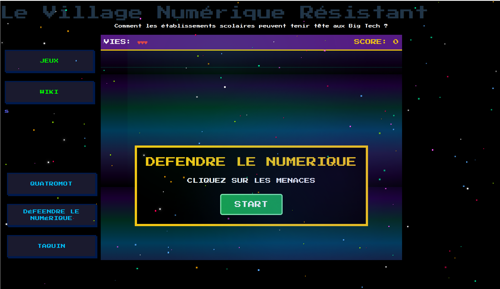
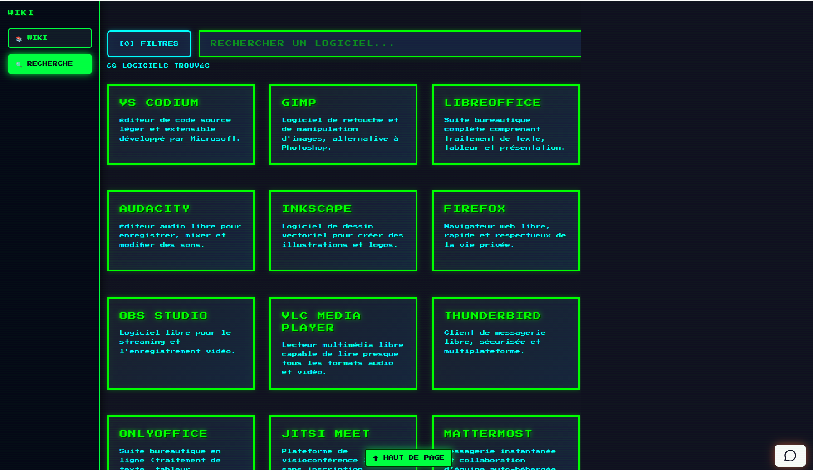

16 heures de développement intensif — du coucher au lever du soleil
Retour au portfolioLa Nuit de l'Info est un hackathon national annuel qui réunit des étudiants en informatique de toute la France autour d'un défi unique : développer une application web du coucher au lever du soleil. Notre équipe de 10 étudiants devait répondre à une problématique de santé publique — sensibiliser les jeunes à l'importance de prendre soin de leur santé mentale — en concevant une plateforme web interactive.
Durée : 16h en continu | Équipe de 10 | Contrainte : deadline fixe et immuable, travail en parallèle sur Git


Techniques
Humaines
La Nuit de l'Info m'a confirmé que la réussite d'un projet sous pression tient avant tout à l'organisation et à la communication, bien plus qu'aux compétences techniques individuelles. Savoir prioriser, découper le travail et rester aligné en équipe est ce qui fait la différence entre un projet qui aboutit et un qui s'éparpille.
Sur le plan personnel, tenir 16h de développement intensif tout en gardant la qualité et la lucidité pour les décisions techniques est une expérience difficile à reproduire autrement. J'en suis ressorti avec une bien meilleure conscience de mes limites et de mes ressources.